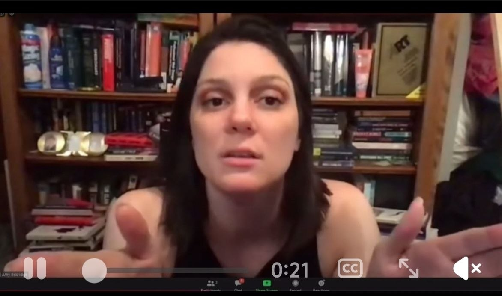
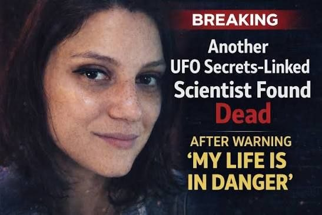

Amy Eskridge
Ein eigenständiger Nachtrag zur Großakte um tote und vermisste Wissenschaftler — mit Fokus auf eine Figur, die in Disclosure-, UAP- und High-Tech-Kreisen als besonders dubios wahrgenommen wird.


Warum Amy Eskridge hier separat auftaucht
Ein Name, der in einer strengen Mainstream-Zusammenfassung oft fehlt, für die Sourkraut-Perspektive aber fast schon unverzichtbar ist, ist Amy Eskridge. Gerade weil ihr Fall nicht einfach nur nach klassischem Labor- oder Behördenvorgang klingt, sondern weil sich um ihre Person ein eigenartiger Mix aus fortgeschrittener Forschung, ungewöhnlichem Wissen, futuristischen Technologien und UFO-/Black-Project-Spekulationen gelegt hat.
In der erweiterten Community-Erzählung ist Amy Eskridge nicht bloß irgendein weiterer Name auf einer Liste. Sie steht eher für die beunruhigende Vorstellung, dass Menschen mit Blick auf sensible, nicht alltägliche Technologien oder mit Nähe zu schwer greifbaren Projekten plötzlich aus dem sichtbaren Raster fallen können — und dass genau dadurch ein Fall im Nachhinein noch viel rätselhafter wirkt als im Moment selbst.

Warum ihr Fall so viel stärker wirkt als ein normaler Nachtrag
Der Mystery-Wert rund um Amy Eskridge ist besonders hoch, weil ihr Name in alternativen Recherchen, Tech-/Disclosure-Kreisen und verschwörungssensiblen UAP-Diskussionen nicht wie eine Randnotiz behandelt wird, sondern fast wie ein fehlendes Puzzleteil. Genau dadurch kippt sie aus der Kategorie „kleine Ergänzung“ in die Kategorie eigene Nachtragsakte.
Wichtig bleibt trotzdem die saubere Trennung: Diese Aufladung ist Teil des Falls — nicht automatisch schon dessen Beweis. Aber für die Dramaturgie und Vollständigkeit von Akte 010 gehört Amy Eskridge klar in den erweiterten Verdachtsraum.
Was sich jetzt belastbarer sagen lässt
Mit den jetzt nachgezogenen Quellen lässt sich Amy Eskridge präziser einordnen: Sie wird in neueren Berichten als Huntsville-Forscherin beschrieben, als Mitgründerin des Institute for Exotic Science und als Figur aus dem Umfeld experimenteller Propulsions- und Antigravitationskonzepte. Genau dieser Mix aus realer Forschungsidentität und maximal aufgeladenem Themenfeld macht ihren Namen für die Community so brisant.
Mehrere Berichte heben außerdem hervor, dass sie öffentlich über Bedrohungsgefühle, Disclosure-Druck und die Angst sprach, ihr Wissen nicht mehr rechtzeitig veröffentlichen zu können. Das beweist keine Verschwörung — aber es erklärt sehr gut, warum ihr Fall heute so viel heftiger gelesen wird als ein gewöhnlicher Randfall.
Quellen & Einordnung
Nützlich für die aktuelle Einordnung des Falls, ihre Forschungsfelder, ihre öffentlichen Aussagen zu Antigravitation und die erneute Aufmerksamkeit im Kontext der toten/vermissten Wissenschaftler.
Quelle öffnen
Wichtig für den lokaleren, nüchterneren Rahmen: Huntsville, Institute for Exotic Science, experimentelle Propulsionsforschung und die Einordnung in die laufende Debatte.
Quelle öffnen
Wertvoll als Spur in das Forschungs- und Vortragsumfeld: Amy Eskridge und Richard Eskridge tauchen dort im Kontext von Gravity-Modification- und Anti-Gravity-Themen auf.
Quelle öffnen